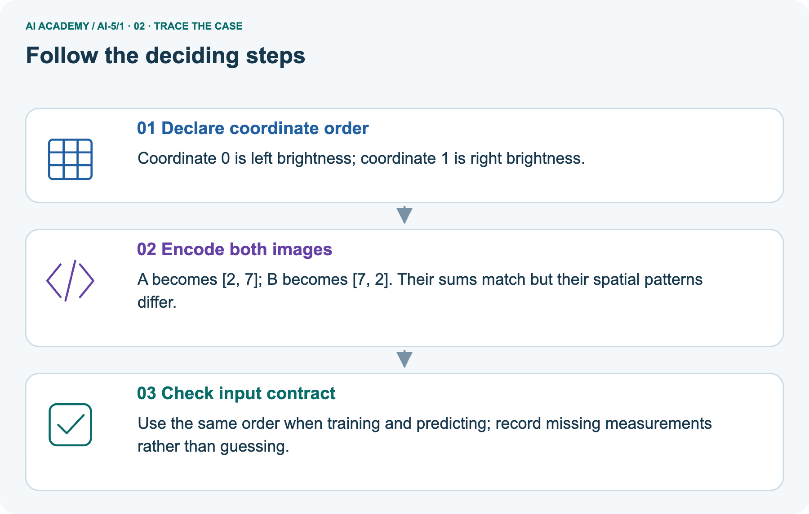
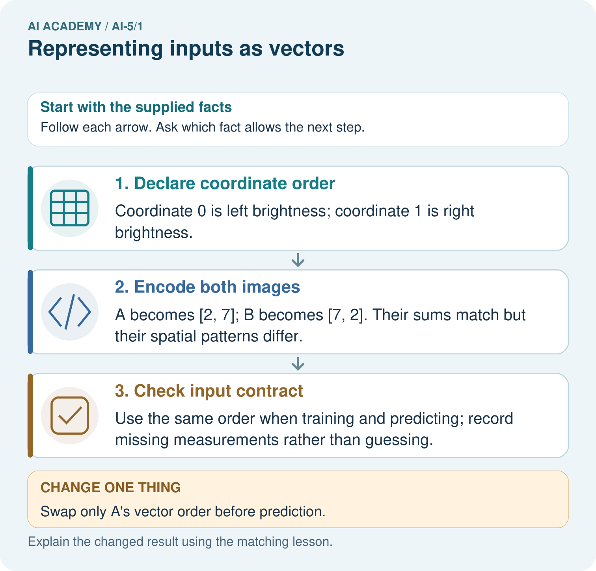
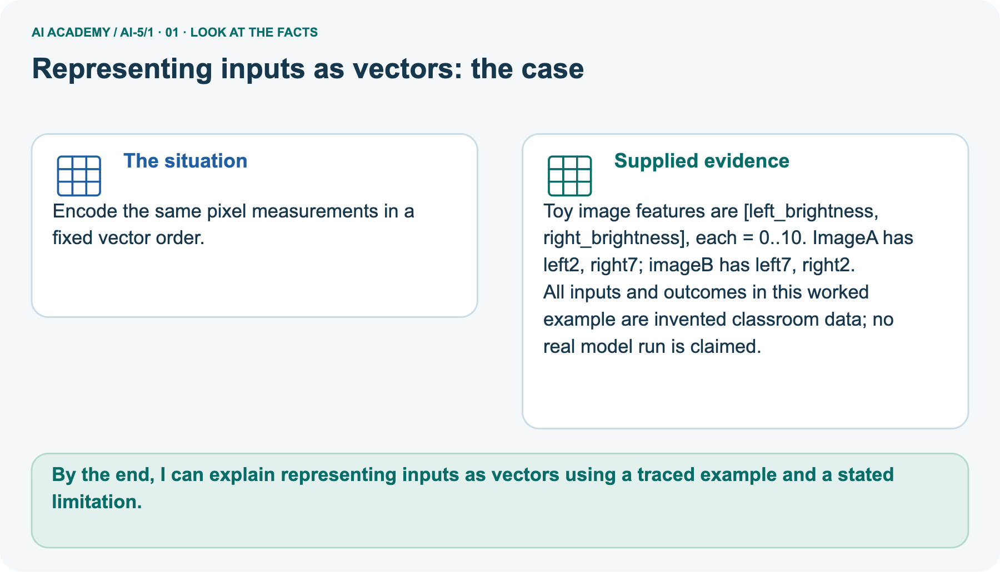
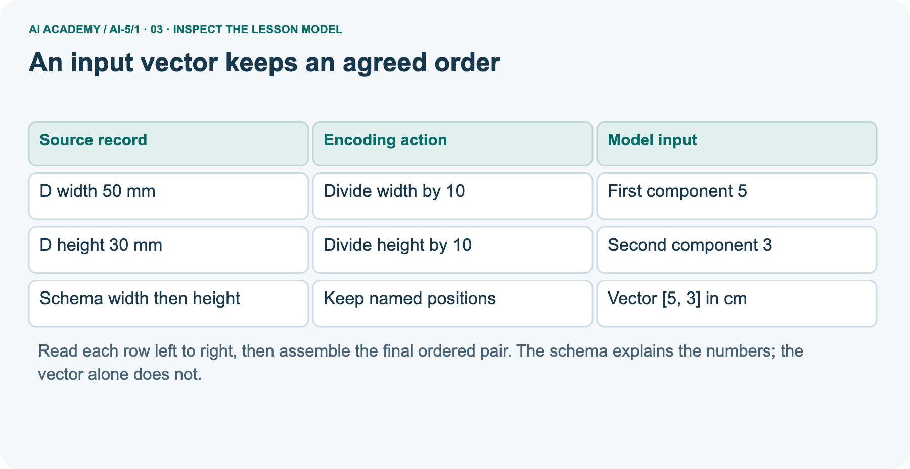
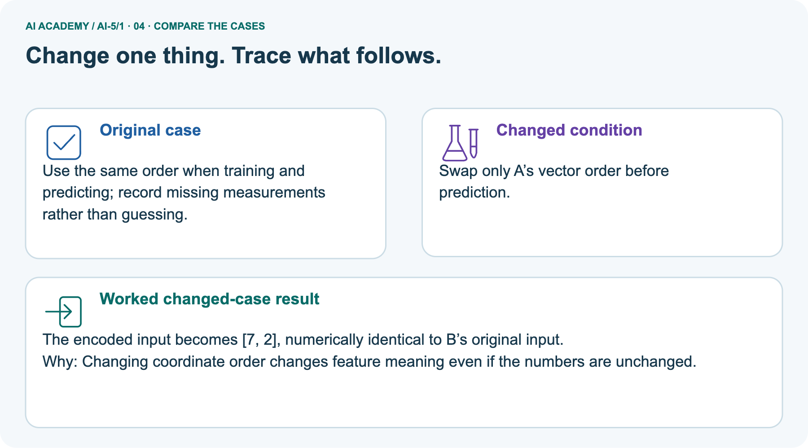
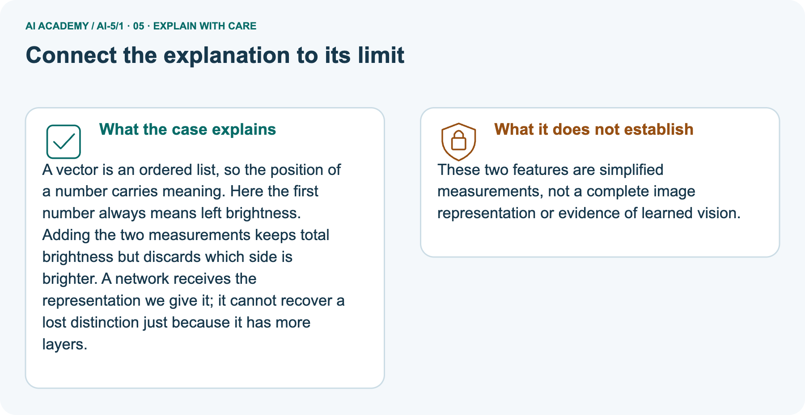

AI Academy · Level 5 · Grade 10 · Week 1 · Teacher guide
Representing inputs as vectors
Learn to understand, design, build, test and explain AI systems responsibly.
Project: Image-pattern Network Investigation
THE CONNECTED WEEK
Teach coordinate meaning before network arithmetic.
Use named boxes,complete records and unit/missing probes;keep the independent schema answer private until attempted.
Keep one habit: Assess order,units,dimension,table shape and target exclusion with the supplied teacher keys.
Main lesson · Section 1
Prepare the connected mathematical investigation
Keep explanation,shared practice and independent evidence distinct.
Target and main teaching plan
Primary target: Encode a record using a fixed feature order and units
| Session | Sequence and minutes | Resources |
|---|---|---|
| Session 1 · Understand · 45 min | 0–7: recall and prerequisite; 7–15: inspect the concrete case and predict; 15–30: teacher models the worked trace; 30–40: learners explain a step using the text and visual; 40–45: check the core idea. | Use Your mission, Notice the evidence, See how it works, Words that unlock the idea and Follow a worked example; record recall in the workbook. |
| Session 2 · Practise · 45 min | 0–5: retrieve the procedure; 5–15: W2 completion practice; 15–23: explain and check with a partner; 23–30: each learner answers the misconception check; 30–40: targeted reteaching or a harder variation; 40–45: prepare the investigation. | Use Find and repair a mistake, Practise together and Build your understanding; use the matching workbook W2 and Individual reasoning check. |
| Session 3 · Investigate and transfer · 45 min | 0–5: retrieve the decision rule; 5–20: investigate or trace; 20–30: start the independent case; 30–38: connect the project; 38–43: act on feedback; 43–45: plan the return check. | Use Run the investigation, Connect your project and Try a new case independently. Allow extra time for the full task set. When code is supplied, use the examples in See how it works or Follow a worked example and the browser lab in Supported practice, repair and portfolio. |
This is a starting allocation of 135 minutes, not a validated duration. Preserve all named topics. Schedule extra time for connected examples, the full investigation, independent cases and project building.
Repeated copies of a case share one recorded attempt; they are not new evidence.
Preparation and prerequisite
Printed lesson and workbook; paper and pencil
Calculator and optional local Python 3 editor; no packages or AI accounts needed
Use the fictional examples supplied; prepare the fresh retry before class
The class is the target being predicted. Supplying that answer as an input leaks information that would not be available for a new prediction.
Opening retrieval
Without opening the old lesson, explain one key idea from ML Builder Expo. Give an example and a mistake that the idea helps you avoid.
Look for: Defend the project using traceable evidence
Reference example, not the only acceptable wording: Teacher explanation: A valid response names the fictional task, reports an auditable baseline/candidate comparison with denominator, and restricts the claim to the evaluated setup.
Pictured end goal
By the end, I can explain representing inputs as vectors using a traced example and a stated limitation.
Earlier wording, alternatives and picture transcripts
Teach the learning cycle
Retrieval answer guidance
ML Builder Expo
Begin Level 5 (Grade 10) by connecting the Level 4 (Grade 9) feature table to an ordered numerical input. Students should name every component before calculating. For the compact alternative schedule, use two 45-minute sessions.
Avoid treating a vector as a mysterious neural object: the learning target is a precise data contract, including order, units, missing values and the distinction between inputs and targets.
Outcomes
Encode a record using a fixed feature order and units
Distinguish a vector dimension from the number of examples
Detect missing values and target leakage before computation
Preparation
Prerequisite answer
End goal for the pictorial case
This added worked case illustrates the week’s main idea. Retain all original and connected topics; schedule its practice within the teaching cycle.
Main lesson · Section 2
Model the contract before the calculation
Keep parcel measurements and brightness coordinates explicitly distinct.
Complete parcel explanation and conversion
A neural network receives numbers in a specified order. Before learning how it computes, we need to represent one example without losing the meaning of its fields.
A vector is an ordered list: [4, 2] can mean width 4 cm and height 2 cm if that is the declared order. Reversing the two numbers describes a different rectangle under the same schema.
For this fictional parcel investigation, use [width in cm, height in cm]. Width and height must both be present and greater than zero. The vector has dimension 2 because it contains two components.
Record IDs identify examples; they do not measure the parcel. The target class is stored separately.
There are three examples, each with two features. Stacking their vectors makes a table with three rows and two columns. Do not confuse the number of rows with the dimension of one input.
Read fields by name, convert to the declared units, validate, and only then write the vector. Parcel D has width 50 mm and height 30 mm. Because 10 mm equals 1 cm, its encoded vector is [5, 3].
Writing [50, 30] would preserve the numbers while changing the physical meaning by a factor of ten.
This short function assumes each supplied value is a number in mm or None for missing. It is a classroom example, not a complete input validator. Trace the conversion before running it.
The function represents data; it does not fit a model or predict a class.
| Encode parcel D | Value / check |
|---|---|
| Read named source fields | width 50 mm, height 30 mm |
| Convert each measurement to cm | width 50÷10=5, height 30÷10=3 |
| Check the declared input contract | Both measurements present and positive |
| Write the fixed coordinate order | [width_cm, height_cm]=[5, 3] |
| Exclude audit metadata and target | Record ID and future class are not coordinates |
Pictured brightness facts and scope
Encode the same pixel measurements in a fixed vector order.
Toy image features are [left_brightness, right_brightness], each = 0..10. ImageA has left 2, right 7; imageB has left 7, right 2.
All inputs and outcomes in this worked example are invented classroom data; no real model run is claimed.
Keep the two schemas separate:parcel coordinates mean width_cm/height_cm; picture coordinates mean left/right brightness on0–10. In the brightness schema, A=[2, 7] and B=[7, 2]. Both sum to9, but position 0 and position 1 represent different locations. Keeping the ordered pair preserves this distinction; keeping only the sum loses it. Swapping only A’s order makes its supplied numbers match B’s original vector.
That is an encoding change, not evidence that a network has learned vision.
Trace positions,information loss and changed input



Read the picture one step at a time
A vector is an ordered list, so the position of a number carries meaning. Here the first number always means left brightness. Adding the two measurements keeps total brightness but discards which side is brighter.
A network receives the representation we give it; it cannot recover a lost distinction just because it has more layers.
These two features are simplified measurements, not a complete image representation or evidence of learned vision.
Change: Swap only A’s vector order before prediction.
Prediction: The encoded input becomes [7, 2], numerically identical to B’s original input.
Reason: Changing coordinate order changes feature meaning even if the numbers are unchanged.
Earlier wording, alternatives and picture transcripts
| Term | Meaning |
|---|---|
| Vector | An ordered list of numerical components |
| Component | One value at a specified position in a vector |
| Dimension | The number of components in a vector |
| Schema | The recorded feature order, units and validity rules |
An input vector keeps an agreed order
Guided E: [2, 7]. The reversed [7, 2] means width 7 cm and height 2 cm, a different measurement pair. Exit: [4, 2] reveals only width and height under the schema.
It cannot reveal the omitted distinction causing different labels; the same deterministic input receives the same output.
Model the reasoning aloud
Use the complete worked example below before asking learners to complete W2. Reveal a small part, invite a prediction, then explain the deciding step.
These teacher notes contain solutions; do not reveal the independent case answer during modelling.
An input vector keeps an agreed order
| Thinking move | Teacher prompt |
|---|---|
| Plan | What is given? What is the question? Which procedure fits these facts? |
| Do | Point to each input and intermediate step in the worked trace. Name the rule that allows the next step. |
| Check | Does the output answer the question? Which assumption or limitation prevents a larger claim? |
Use the diagram and verbal explanation together. Ask learners to match a sentence to a specific visual step; do not assign learners fixed visual or auditory learning styles.
A pictorial worked case: Representing inputs as vectors
The facts we will use



Why this result follows
What this example does not establish
Change one thing in the pictured case
Ask while showing the picture
Cover the result. Ask learners to name the inputs and predict the next step. Uncover one step, connect the icon to the actual procedure, and explain its evidence. Then change the supplied condition and compare.
The picture is a representation; it does not document execution of a real AI model.
Main lesson · Section 3
Model a step,then remove help
Collect each learner’s reasoning before showing a key.
Current completion task and checked reasoning
Completion task: A new record has width 60 mm and height 10 mm. Give its vector in the agreed cm schema, and name one error in [60, 10].
Teacher check: Teacher explanation: The vector is [6, 1]. [60, 10] uses mm numbers where cm numbers are expected, scaling both measurements tenfold.
Start by identifying the given inputs together. Leave the intermediate steps blank. If needed, model one step, then withdraw that help on the next step. Move to a full trace only when the partial trace is understood.
For partners, alternate explainer and checker; collect a response from every learner before discussion.
Individual misconception check
Use the worked case for Representing inputs as vectors. Proposed explanation: “Order does not matter”. Decide whether this explanation is supported.
Point to the step or supplied fact that decides; explain your repair if needed.
Expected correction: A and B use the same numbers but assign them to different features. Read each position by name.
Collect explanations, not only yes/no votes. If a misunderstanding is common, re-model the relevant step for the class.
If it affects a few learners, give a short targeted group explanation while others solve a more demanding variation.
Pictured reasoning and changed case
Why does equal total brightness not make A and B identical inputs? Point to the relevant step in the picture, then write the changed result and the rule or evidence that supports it.
A and B place brightness in different positions. The ordered vectors distinguish left/right structure; their common sum 9 loses that distinction.
Changed-case check: The encoded input becomes [7, 2], numerically identical to B’s original input. Changing coordinate order changes feature meaning even if the numbers are unchanged.
Changed-case reasoning: The encoded input becomes [7, 2], numerically identical to B’s original input. Changing coordinate order changes feature meaning even if the numbers are unchanged.
Collect each learner’s explanation before discussion. Use the first missing connection between input, deciding step and result to choose support. This question is worked-case practice, not fresh mastery evidence.
Accessible support and extension
Use See how it works and Follow a worked example. Collect a prediction before revealing its result; ask the learner to point to each intermediate fact.
Provide empty boxes labelled with feature names and units. Accept a correct spoken explanation before written notation.
Extension: propose two different real objects that share the same two-feature vector, then identify an additional measurable feature available before prediction.
Earlier wording, alternatives and picture transcripts
| Time or stage | Teacher action |
|---|---|
| Session 1 start to 7 minutes | Ask the prerequisite question. Retrieve the distinction between a feature and a target; require a prediction-time explanation. |
| 7 to 18 minutes | Place A, B and C on paper. Students label horizontal width and vertical height, then write vectors with the schema above them. |
| 18 to 32 minutes | Complete W1 and W2. Contrast three examples with two components per example. Model the mm-to-cm conversion explicitly. |
| 32 to 45 minutes | Trace the Python function or its paper equivalent. Complete the guided E case and compare the swapped vector. |
| Session 2 start to 8 minutes | Retrieve the schema without looking. Ask how two correctly sized vectors can have different meanings. |
| 8 to 20 minutes | Use W3 and the identical-input example. Discuss valid zero in another schema without changing the parcel rule. |
| 20 to 35 minutes | Collect W4 independently before giving hints. Check field order, dimensions, valid age zero and the excluded future target. |
| 35 to 45 minutes | Use W5 and the exit response. Give targeted feedback, then administer the fresh retry and retain both attempts. |
Reduce help deliberately
Individual reasoning check
Pictorial practice question
Reasoned teacher answer
Main lesson · Section 4
Run the complete supplied investigation
Separate predictions,actual runs and paper traces.
Complete inputs,expected results and limits
All encoder probes are supplied in student section 9. Normal[6, 1], small-positive[.1, .1], missing/zero raise the stated errors. Passing already-cm values to an mm function silently changes scale; trace names/units. Supported E[2, 7], not[7, 2]. Independent K[18, 5, 12], L[20, 4, 0], dimension 3, shape 2×3, age 0 valid, future label excluded.
Preserve the first attempt before feedback; the parcel positivity rule is not a universal rule for all fields.
Diagnose the current misconceptions
Order does not matter: A and B use the same numbers but assign them to different features. Read each position by name.
More rows increase vector dimension: Rows count examples; components count features of one example.
A missing value is zero: Whether zero is valid depends on the field. Missing means unknown, and is not interchangeable with a measured zero.
Use Run the investigation for the evidence ledger. Add a boundary or missing-input case and record the expected response before checking. More successful repeats of one case do not establish wider coverage.
Choose accessible support
| What the response shows | Next teaching action |
|---|---|
| Missing or misread facts | Read the case aloud, mark supplied versus unknown facts, and let the learner restate it. |
| Wrong procedure | Return to the deciding step in the worked case. Contrast it with the proposed incorrect explanation. |
| Arithmetic or implementation error | Trace intermediate values or lines; preserve the first mismatch and retry that step. |
| Correct result without a reason | Ask for a trace and a changed case before marking independent understanding. |
| An unsupported wider claim | Ask which supplied evidence supports the claim and which further observation would be needed. |
Offer an oral explanation, drawing, enlarged visual or fewer examples when that removes a reading/writing barrier. Keep the same reasoning goal.
Stretch secure learners by changing a boundary or assumption and asking them to defend the effect, not simply by assigning more of the same questions.
Earlier wording, alternatives and picture transcripts
Match the support to the first error
Main lesson · Section 5
Assess the new schema or calculation transfer
Keep the selected answer private until after a first attempt.
Selected independent task and checked answer
Selected case: A new toy battery task uses [temperature in degrees C, voltage in V, age in days]. Record K has voltage 5, age 12, temperature 18. Record L has temperature 20, voltage 4, age 0.
Encode both; state the vector dimension and table shape. Age zero is valid. The future failure label is also supplied in the data file: should it be appended?
Teacher explanation: K [18, 5, 12], L [20, 4, 0]. Dimension 3, table 2 rows by 3 columns. Age zero is a valid known value. Exclude the future failure target from inputs; it is not available at prediction time.
Judge explanation,trace and limits
| Dimension | Evidence required |
|---|---|
| Explanation | Names the applicable idea or procedure and ties it to the supplied facts. |
| Trace and result | Preserves the given inputs and shows the relevant intermediate steps; distinguishes a prediction from an observed execution. |
| Limits | States the assumptions, missing evidence or conditions under which the result would change. |
Record each dimension as not yet, with support, or independent. Accept a valid alternative procedure with a defensible trace.
Do not penalise an honestly recorded model failure if the learner correctly explains its evidence and limits.
Give one usable repair
Name the earliest unsupported step and give one action to repair it. Have the learner make that repair now and explain why. Then assess the relevant skill on a fresh, fully specified case.
Confirm it was not previously practised with feedback; solve and check the new case before assigning it. A follow-up design prompt is a starting brief, not automatically an equivalent test.
W1 Encode the records
Write A, B and C as ordered pairs from the lesson. State the dimension of each and the shape of the stacked table.
Teacher explanation: A [4, 2], B [2, 4], C [3, 3]. Each has dimension 2. The table has 3 rows and 2 columns.
W2 Convert before encoding
A new record has width 60 mm and height 10 mm. Give its vector in the agreed cm schema, and name one error in [60, 10].
Teacher explanation: The vector is [6, 1]. [60, 10] uses mm numbers where cm numbers are expected, scaling both measurements tenfold.
W3 Handle missing information
Width is 4 cm and height is missing. A teammate writes [4, 0]. Explain why this is invalid and give the action required by this schema.
Teacher explanation: Missing is not measured zero. Height must be present and positive; reject the record and request a valid measurement before encoding.
W5 Explain a collision
Two parcels have the same width and height but different material and target class. Explain why adding more examples alone cannot let this deterministic two-feature model tell these two inputs apart.
Teacher explanation: The two input vectors are identical, so the fixed deterministic computation returns the same output.
Additional rows do not create a missing distinction in these two vectors; a relevant available feature or an explicit uncertainty policy may be needed.
Earlier wording, alternatives and picture transcripts
Guided and exit questions
Guided E: [2, 7]. The reversed [7, 2] means width 7 cm and height 2 cm, a different measurement pair. Exit: [4, 2] reveals only width and height under the schema.
It cannot reveal the omitted distinction causing different labels; the same deterministic input receives the same output.
W1 Encode the records
W2 Convert before encoding
W3 Handle missing information
W4 Apply a new schema independently
A new toy battery task uses [temperature in degrees C, voltage in V, age in days]. Record K has voltage 5, age 12, temperature 18. Record L has temperature 20, voltage 4, age 0.
Encode both; state the vector dimension and table shape. Age zero is valid. The future failure label is also supplied in the data file: should it be appended?
Teacher explanation: K [18, 5, 12], L [20, 4, 0]. Dimension 3, table 2 rows by 3 columns. Age zero is a valid known value. Exclude the future failure target from inputs; it is not available at prediction time.
W5 Explain a collision
Independent assessment and fresh retry
Assess W4 for named order, all values retained, dimension 3, two-row shape and exclusion of the future label.
Fresh retry: schema [mass in g, length in cm]; two records (length 4, mass 12) and (mass 9, length 6) encode as [12, 4] and [9, 6], dimension 2, table 2 by 2.
Ask why an absent mass must not become zero without a declared policy.
Assess independent transfer
Selected case answer
Feedback that the learner uses
Main lesson · Section 6
Connect,support and revisit the mathematics
Use the saved evidence to choose the next step.
Project and next-week bridge
Add a labelled representing inputs as vectors evidence sheet to Image-pattern Network Investigation. Show how you can encode a record using a fixed feature order and units.
Use the supplied fictional case and keep its inputs, intermediate steps, calculation or prediction, and limitation. Connect this record to last week’s record; a matching answer without a trace is insufficient.
Provide empty boxes labelled with feature names and units. Accept a correct spoken explanation before written notation.
Extension: propose two different real objects that share the same two-feature vector, then identify an additional measurable feature available before prediction.
Week 2 uses the ordered components in dot products. Revisit order and signed multiplication before introducing weights.
Retain the project ledger and assess a changed case after support. Check the relevant prerequisite before carrying this component forward.
For your Image-pattern Network Investigation, save the input, procedure, observed result and limitation of this check.
Label this worked example as practice; use a different, previously unreviewed case when checking independent understanding.
Delayed return and support record
Suggested return points in this level: ai-5/2, ai-5/4, ai-5/7. Use actual classroom dates, adjusting for holidays and gaps. One, three and six teaching weeks are scheduling choices, not a claimed optimal spacing.
At a delayed check, ask for the idea from memory and a changed application. Compare with the earlier independent response and record support used.
For a new level, revisit the previous capstone before checking the new prerequisites.
| Record | Teacher evidence |
|---|---|
| Learner code and date | |
| Concept and case used; prior exposure | |
| Explanation / trace / limits | |
| Support and first repair | |
| Changed case and delayed outcome | |
| Next teaching action |
Use the evidence to choose reteaching or the next step. A completed page, confidence rating or attractive project does not by itself demonstrate understanding.
Earlier wording, alternatives and picture transcripts
Plan the delayed return
Project evidence from this case
Reference bank and extra practice
Choose the reference that helps your next step.
Reference · Alternative planning checklist
Reference · Section 7
Reference · Alternative planning checklist
Use alongside the main route when helpful.
Planning,assessment and project reminders
Teaching target: Encode a record using a fixed feature order and units
Prepare the labelled worked-case picture, the matching workbook, fictional input cards and a place for individual responses. Check a local Python 3 environment before class; have a paper-trace version ready.
| Session | Plan | Resources |
|---|---|---|
| Session 1 · Understand · 45 min | 0–7: recall and prerequisite; 7–15: inspect the concrete case and predict; 15–30: teacher models the worked trace; 30–40: learners explain a step using the text and visual; 40–45: check the core idea. | Use Your mission, Notice the evidence, See how it works, Words that unlock the idea and Follow a worked example; record recall in the workbook. |
| Session 2 · Practise · 45 min | 0–5: retrieve the procedure; 5–15: W2 completion practice; 15–23: explain and check with a partner; 23–30: each learner answers the misconception check; 30–40: targeted reteaching or a harder variation; 40–45: prepare the investigation. | Use Find and repair a mistake, Practise together and Build your understanding; use the matching workbook W2 and Individual reasoning check. |
| Session 3 · Investigate and transfer · 45 min | 0–5: retrieve the decision rule; 5–20: investigate or trace; 20–30: start the independent case; 30–38: connect the project; 38–43: act on feedback; 43–45: plan the return check. | Use Run the investigation, Connect your project and Try a new case independently. Allow extra time for the full task set. When code is supplied, use the examples in See how it works or Follow a worked example and the browser lab in Supported practice, repair and portfolio. |
Before class, solve the supported practice: A new record has width 60 mm and height 10 mm. Give its vector in the agreed cm schema, and name one error in [60, 10].
Reasoned practice answer: Teacher explanation: The vector is [6, 1]. [60, 10] uses mm numbers where cm numbers are expected, scaling both measurements tenfold.
Check every learner before discussion: Use the worked case for Representing inputs as vectors. Proposed explanation: “Order does not matter”. Decide whether this explanation is supported.
Point to the step or supplied fact that decides; explain your repair if needed.
Misconception repair: A and B use the same numbers but assign them to different features. Read each position by name.
Support: read the exact case aloud, enlarge the labelled picture, supply input cards and model only the first deciding step. Accept a spoken explanation or drawing; retain the reasoning goal.
Extension: Swap only A’s vector order before prediction. Require a prediction and a reason before comparing. Expected result: The encoded input becomes [7, 2], numerically identical to B’s original input.
Reason: Changing coordinate order changes feature meaning even if the numbers are unchanged.
Independent assessment: withhold the reserved answer until the learner has attempted the new case. Record support separately from correctness.
| Criterion | Not yet | With support | Independent |
|---|---|---|---|
| Explanation | Names an answer without a deciding fact | Uses a hint to link fact and decision | Explains the deciding fact in own words |
| Trace or test | Cannot connect input and result | Completes steps with prompts | Traces or tests a changed case accurately |
| Limits and revision | Claims more than evidence supports | Names a limit after a prompt | States a defensible limit and useful next test |
Project checkpoint: Frame the need. Name the user, the problem, allowed inputs and a safe simple starting method.
Use the weekly teacher answer for topic-specific reasoning. A saved progress tick is an activity record; judge mastery from the learner’s explanation and evidence.
Reference · Feedback,labs and repair paths
Reference · Section 8
Reference · Feedback,labs and repair paths
Retain the first attempt and the evidence used for a repair.
Feedback and record guidance
Use the two formative questions as supported practice, not as independent mastery scores. Discuss the deciding evidence rather than accepting a guessed selection.
The feedback comes from the reviewed public worked case. Do not reveal the separately reserved independent teacher answer until the learner has attempted that case.
Ask students to predict before running code. Preserve errors and actual outputs; collect a changed test and an explanation. The branch-boundary and indexing lessons deliberately include failure cases.
Use the earlier worked-explanation links to address a specific missing building block, then return to the current question. Adapt this suggestion after observing the learner; it is not an automatic diagnosis.
Collect the completed-work portfolio as evidence. Record support separately from correctness, and assess explanation, trace/test and limitations. Progress ticks and quiz selections alone do not establish mastery.
Reference · Teach with the six pictures
Reference · Section 9
Reference · Teach with the six pictures
Choose one picture for a particular reasoning move.
01. Representing inputs as vectors: the case



Encode the same pixel measurements in a fixed vector order. Supplied facts: Toy image features are [left_brightness, right_brightness], each = 0..10. ImageA has left 2, right 7; imageB has left 7, right 2.
All inputs and outcomes in this worked example are invented classroom data; no real model run is claimed.
Point to the given fact that matters most. Explain why it matters.
Teacher prompt: Point to the given fact that matters most. Explain why it matters. Ask learners to describe one label or arrow in ordinary words. Use the adjacent transcript if the image is difficult to see.
02. Follow the deciding steps
Declare coordinate order: Coordinate 0 is left brightness; coordinate 1 is right brightness. → Encode both images: A becomes [2, 7]; B becomes [7, 2].
Their sums match but their spatial patterns differ. → Check input contract: Use the same order when training and predicting; record missing measurements rather than guessing.
Point to each numbered stage and explain which recorded input it uses.
Teacher prompt: Point to each numbered stage and explain which recorded input it uses. Ask learners to describe one label or arrow in ordinary words. Use the adjacent transcript if the image is difficult to see.
03. An input vector keeps an agreed order



An input vector keeps an agreed order. D width 50 mm | Divide width by 10 | First component 5. D height 30 mm | Divide height by 10 | Second component 3. Schema width then height | Keep named positions | Vector [5, 3] in cm
Read the labels and values. Explain the relationship the model shows.
Teacher prompt: Read the labels and values. Explain the relationship the model shows. Ask learners to describe one label or arrow in ordinary words. Use the adjacent transcript if the image is difficult to see.
04. Change one thing. Trace what follows.



Original case: Use the same order when training and predicting; record missing measurements rather than guessing. Changed condition: Swap only A’s vector order before prediction.
Expected result: The encoded input becomes [7, 2], numerically identical to B’s original input. Reason: Changing coordinate order changes feature meaning even if the numbers are unchanged.
Predict before checking the worked changed-case result. Name what changed and what the supplied facts allow you to conclude.
Teacher prompt: Predict before checking the worked changed-case result. Name what changed and what the supplied facts allow you to conclude. Ask learners to describe one label or arrow in ordinary words.
Use the adjacent transcript if the image is difficult to see. Changed-case reasoning: Changing coordinate order changes feature meaning even if the numbers are unchanged.
05. Connect the explanation to its limit



A vector is an ordered list, so the position of a number carries meaning. Here the first number always means left brightness. Adding the two measurements keeps total brightness but discards which side is brighter.
A network receives the representation we give it; it cannot recover a lost distinction just because it has more layers.
Limit: These two features are simplified measurements, not a complete image representation or evidence of learned vision.
Explain the case, then point to a limit on the claim.
Teacher prompt: Explain the case, then point to a limit on the claim. Ask learners to describe one label or arrow in ordinary words. Use the adjacent transcript if the image is difficult to see.
Keep the stated scope: These two features are simplified measurements, not a complete image representation or evidence of learned vision.
06. Make the idea visible in your project


For your Image-pattern Network Investigation, save the input, procedure, observed result and limitation of this check.
Label this worked example as practice; use a different, previously unreviewed case when checking independent understanding. Draw your input, deciding step, result and limit.
Supported question: Why does equal total brightness not make A and B identical inputs? Point to the relevant step in the picture, then write the changed result and the rule or evidence that supports it.
Draw your project trace and justify the deciding step using evidence.
Teacher prompt: Draw your project trace and justify the deciding step using evidence. Ask learners to describe one label or arrow in ordinary words. Use the adjacent transcript if the image is difficult to see.
Supported practice key: A and B place brightness in different positions. The ordered vectors distinguish left/right structure; their common sum 9 loses that distinction.
Changed-case check: The encoded input becomes [7, 2], numerically identical to B’s original input. Changing coordinate order changes feature meaning even if the numbers are unchanged.
Earlier wording, alternatives and picture transcripts
Use one picture at a time. Hide a worked result before asking for a prediction, then reveal it for feedback. These are supported teaching cases; retain the separate independent assessment for a fresh first attempt.